After studying constructions that build new \(\infty \)-categories out of old ones, we now return to the internal geometry of a single \(\infty \)-category. The first step is to enlarge the class of diagrams we can speak about and to formalize the common practice of displaying only the visible edges of such diagrams. This leads to the Segal axiom, which makes composition of morphisms precise. Once composition is in place, we can define isomorphisms and recover, in a formal way, the notion of anima introduced heuristically in Section 1.1.
1.4.1 Commutative diagrams
Besides commutative triangles, several other simple diagram shapes occur constantly in practice: commutative squares, spans, cospans, and infinite strings of composable morphisms. The next axiom formalizes the idea that for these diagram shapes, the higher data is determined by the lower-dimensional data we choose to display.
Definition 1.4.1 (Diagram shapes). A commutative square in an \(\infty \)-category \(C\) is a functor \([1] \times [1] \to C\). We will often display such a square as
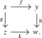
Throughout, we read the first coordinate of \([1] \times [1]\) as the row and the second as the column, so that the four objects \((0,0)\), \((0,1)\), \((1,0)\) and \((1,1)\) are displayed as \(x\), \(y\), \(z\) and \(w\), respectively. In particular \(\{0\} \times [1]\) and \(\{1\} \times [1]\) are the top and bottom rows, while \([1] \times \{0\}\) and \([1] \times \{1\}\) are the left and right columns.
Let \(\pushout \subseteq [1] \times [1]\) be the subposet spanned by the three objects \((0,0)\), \((0,1)\) and \((1,0)\), and let \(\pullback \subseteq [1] \times [1]\) be the subposet spanned by the three objects \((1,0)\), \((0,1)\) and \((1,1)\). A span in \(C\) is a functor \(\pushoutto C\), and a cospan in \(C\) is a functor \(\pullbackto C\). We display them as
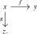
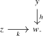
Every commutative square gives rise to both a span and a cospan via restriction along the two inclusions \(\pushout \hookrightarrow [1] \times [1]\) and \(\pullback \hookrightarrow [1] \times [1]\).
Finally, let \([\omega ] := \{0 \leq 1 \leq 2 \leq 3 \leq \cdots \}\) be the poset of natural numbers. An infinite sequence of morphisms in \(C\) is a functor \(x_{\bullet }\colon [\omega ] \to C\), which we display as \[ x_0 \xrightarrow {f_0} x_1 \xrightarrow {f_1} x_2 \xrightarrow {f_2} \dots , \] where \(x_n\) is the evaluation of \(x_{\bullet }\) at \(n \in [\omega ]\) and \(f_n\) is obtained from the inclusion \([1] \cong \{n \leq n+1\} \hookrightarrow [\omega ]\).
These pictures record only part of the underlying functorial data: they display the visible edges, while suppressing composites and higher cells. We axiomatize that this omitted data is recoverable.
Axiom D (Commutative diagram axiom). The following commutative squares are pushouts of \(\infty \)-categories:
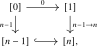
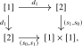
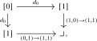
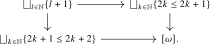
Here the first square is required to be a pushout for every \(n \geq 1\). In the last square, the right and bottom maps are the inclusions, while the top and left maps send the vertex \(\{l+1\}\) to the corresponding vertex with the same label.
Exercise 1.4.2. Unwind the definitions, and show that these five pushout conditions express that finite and infinite strings of composable morphisms, commutative squares, spans, and cospans are determined by the lower-dimensional data displayed above.
We will use two maps that turn commutative triangles into commutative squares with an identity edge.
Construction 1.4.3. There are monotone maps \(p_0,p_2\colon [1] \times [1] \to [2]\), pictorially represented by
Writing \(j_0 := (s_0,s_1)\) and \(j_2 := (s_1,s_0)\) for the two functors \([2] \to [1] \times [1]\) appearing in Axiom D, there are natural isomorphisms \(p_0 \circ j_0 \cong \id _{[2]}\) and \(p_2 \circ j_2 \cong \id _{[2]}\).
Precomposition with \(p_0\) or \(p_2\) displays a commutative triangle as a commutative square whose left or right column, respectively, is an identity. The following proposition makes this precise.
Proposition 1.4.4 (Triangles as squares with an identity edge). For every \(\infty \)-category \(C\), the following two commutative squares are pullback squares:
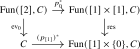
Here the functors labeled ‘res’ are given by precomposition with the inclusions of the left and right columns into \([1] \times [1]\).
Proof guide. Factor each displayed square into two squares. The commutative-square case and the case \(n=2\) of Axiom D identify the resulting squares as pullbacks, and Lemma 1.3.15 finishes the argument. Details are given in the online supplementary material.
1.4.2 Composition of morphisms
Given a commutative triangle \(\sigma \colon [2] \to C\) in an \(\infty \)-category \(C\), we may extract two morphisms \(f := \sigma \circ d_2\) and \(g := \sigma \circ d_0\):
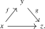
By the case \(n=2\) of Axiom D, the pair \((f,g)\) completely determines the commutative triangle. We refer to this special case as the Segal Axiom:
Proposition 1.4.5 (Segal Axiom). For an \(\infty \)-category \(C\), the restriction functor \[ (d_0^*,d_2^*)\colon \Fun ([2],C) \to \Fun ([1],C) \times _{\ev _0,C,\ev _1} \Fun ([1],C), \qquad \sigma \mapsto (g,f) \] is an equivalence. □
In particular, for morphisms \(f\colon x \to y\) and \(g\colon y \to z\) we obtain a unique commutative triangle \(\sigma \colon [2]\to C\) satisfying \(d_2^*(\sigma ) \cong f\) and \(d_0^*(\sigma ) \cong g\). The resulting morphism \(g \circ f := d_1^*(\sigma )\colon [1] \to C\) is called the composite of \(f\) and \(g\).
Definition 1.4.6 (Arrow category). Let \(C\) be an \(\infty \)-category. We write \[ \Ar (C) \quad := \quad \Fun ([1],C) \] and refer to it as the arrow category of \(C\). Its objects are precisely the morphisms of \(C\). Restriction along the two maps \([0] \to [1]\) defines the source and target functors \[ s := d_1^* = \ev _0\colon \Ar (C) \to C, \qquad t := d_0^* = \ev _1\colon \Ar (C) \to C. \]
The assignment \((g,f) \mapsto g \circ f\) is functorial:
Construction 1.4.7 (Composition functor). Consider the zig-zag \[ \Ar (C) \times _{s,C,t} \Ar (C) \xleftarrow [\sim ]{(d_0^*,d_2^*)} \Fun ([2],C) \xrightarrow {d^*_1} \Ar (C). \] The first map is an equivalence, and hence it admits an inverse, providing a composite functor \[ - \circ - \colon \Ar (C) \times _{s,C,t} \Ar (C) \xrightarrow {\sim } \Fun ([2],C) \xrightarrow {d^*_1} \Ar (C). \] We refer to this as the composition functor.
We will now show that composition in an \(\infty \)-category is unital and associative.
Lemma 1.4.8 (Unitality). For every morphism \(f\colon x \to y\) in an \(\infty \)-category \(C\), there are natural isomorphisms \[ \id _y \circ f \cong f \cong f \circ \id _x \] in \(\Ar (C)\). Moreover, these isomorphisms are natural in \(f\), in the sense that they form natural isomorphisms of functors \(\Ar (C) \to \Ar (C)\).
Proof. For a fixed morphism \(f\), the isomorphisms are an immediate consequence of Exercise 1.2.15, using the degenerate commutative triangles \(s_1^*(f) := f \circ s_1\) and \(s_0^*(f) := f \circ s_0\). For the naturality of the relation \(f \circ \id _x \cong f\) we have to show that the composite \[ \Ar (C) \iso \Ar (C) \times _{s,C,\id } C \xrightarrow {1 \times p_{[1]}^*} \Ar (C) \times _{s,C,t} \Ar (C) \xrightarrow {- \circ -} \Ar (C) \] is isomorphic to the identity functor. This follows from the following commutative diagram:
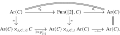
A similar discussion applies to the relation \(f \cong \id _y \circ f\). □
Proposition 1.4.9 (Associativity). For composable morphisms \(f\colon x \to y\), \(g\colon y \to z\) and \(h\colon z \to w\) in an \(\infty \)-category \(C\), there is a natural isomorphism \[ h \circ (g \circ f) \cong (h \circ g) \circ f \] in \(\Ar (C)\).
Proof. Throughout this proof we display a morphism in \(\Ar (C)\) as a commutative square whose two vertical arrows are its source and its target, so that the horizontal direction records the morphism in \(\Ar (C)\); the identification \(\Fun ([1],\Ar (C)) \simeq \Fun ([1] \times [1],C)\) we use is the one that swaps the two factors of \([1] \times [1]\) relative to the convention of Definition 1.4.1. With this reading, consider the following two morphisms in \(\Ar (C)\):
These morphisms are natural in \(f\), \(g\) and \(h\): we have functors \[ \Ar (C) \times _{s,C,t} \Ar (C) \quad \xrightarrow {\simeq } \quad \Fun ([2], C) \quad \xrightarrow {p_0^*} \quad \Fun ([1] \times [1],C), \]
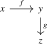
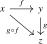
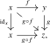
and similarly for the other diagram. Forming the composite of these two morphisms in \(\Ar (C)\), we thus obtain a commutative square in \(C\) of the form
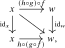
natural in \(f\), \(g\) and \(h\). Using Lemma 1.4.8, the diagonal of this square is then naturally isomorphic to both \((h \circ g) \circ f\) and \(h \circ (g \circ f)\), finishing the proof. □
1.4.3 Isomorphisms, animae and groupoid cores
With composition available, we can now speak about invertibility of morphisms.
Definition 1.4.10 (Isomorphisms). Consider a morphism \(f\colon x \to y\) in an \(\infty \)-category \(C\). We say that \(f\) is invertible, or that it is an isomorphism, if there exists a morphism \(f^{-1}\colon y \to x\) together with commutative triangles in \(C\) of the form
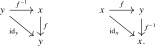
We may now introduce the formal version of the notion of anima from Section 1.1.
Definition 1.4.11 (Anima). An \(\infty \)-category \(C\) is called an anima, or an \(\infty \)-groupoid, if every morphism in \(C\) is invertible.
Recall from Example 1.1.5 that every 1-category \(C\) has an anima of objects \(C^{\simeq }\), called its groupoid core: the subgroupoid of \(C\) which contains all objects but only the invertible morphisms. The groupoid \(C^{\simeq }\) is uniquely characterized by the property that the inclusion \(C^{\simeq } \hookrightarrow C\) is terminal among functors from a groupoid into \(C\). We use this universal property to axiomatize the \(\infty \)-categorical version of the core:
Axiom E (Groupoid core axiom). For every \(\infty \)-category \(C\), there is an anima \(C^{\simeq }\) called the (groupoid) core of \(C\), which comes equipped with a functor \(\gamma _C \colon C^{\simeq } \to C\). Every functor \(F\colon X \to C\) from an anima \(X\) factors through \(\gamma _C\), and for functors \(G,H\colon X \to C^{\simeq }\) every natural isomorphism \(\gamma _C \circ G \cong \gamma _C \circ H\) may be lifted to a natural isomorphism \(G \cong H\).
Furthermore, the map \(\lra {0,1}\colon * \sqcup * \to [1]\) factors through an equivalence \(* \sqcup * \iso [1]^{\simeq }\).
Definition 1.4.12. For \(\infty \)-categories \(C\) and \(D\), we write \(\Map (C,D)\) for the anima \(\Fun (C,D)^{\simeq }\), and refer to it as the mapping anima between \(C\) and \(D\).
Exercise 1.4.13. Show that for an anima \(X\) and an \(\infty \)-category \(C\) the core functor \(\gamma _C\colon C^{\simeq } \to C\) induces an equivalence \[ \Map (X,C^{\simeq }) \iso \Map (X,C). \] Hint: Apply the groupoid core axiom to the evaluation functor \(\Map (X,C)\times X\to C\), and then curry and pass to the core once more.
Exercise 1.4.14. Show that the groupoid-core construction preserves pullbacks: for functors \(C\to E\leftarrow D\), construct a preferred equivalence \[ (C\times _E D)^{\simeq }\simeq C^{\simeq }\times _{E^{\simeq }}D^{\simeq }. \] Hint: Construct both directions from the groupoid-core and pullback universal properties, and compare the composites after projecting to the factors.
Exercise 1.4.15. Let \(F\colon C \to D\) be a functor. Show that the following conditions are equivalent:
- (1)
-
The functor \(F\) is an equivalence;
- (2)
-
For every \(\infty \)-category \(E\) the functor \(F \circ -\colon \Map (E,C) \to \Map (E,D)\) is an equivalence;
- (3)
-
For every \(\infty \)-category \(E\) the functor \(- \circ F\colon \Map (D,E) \to \Map (C,E)\) is an equivalence.
Exercise 1.4.16. Show that a morphism \(f\colon X \to Y\) of animae is an equivalence if and only if the induced map \(f^*\colon \Map (Y,Z) \to \Map (X,Z)\) is an equivalence for every anima \(Z\).
1.4.4 Hom animae
In Section 1.1, we heuristically described the morphisms between two objects of an \(\infty \)-category as forming an anima. We encode this object within our axiomatic setup by the following pullback.
Definition 1.4.17 (Hom anima). Let \(C\) be any \(\infty \)-category. Given objects \(x\) and \(y\) of \(C\), we define the hom anima \(\Hom _C(x,y)\) via the following pullback square:
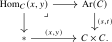
Observe that the objects of \(\Hom _C(x,y)\) are triples \((f,\alpha ,\beta )\), where \(f\colon x' \to y'\) is a morphism in \(C\) and \(\alpha \colon x \cong x'\) and \(\beta \colon y \cong y'\) are isomorphisms in \(C\). We will often abuse notation and pretend that \(x = x'\) and \(y = y'\).
Remark 1.4.18. At this point, the pullback only defines \(\Hom _C(x,y)\) as an \(\infty \)-category. The terminology hom anima will be justified after the Rezk axiom: by Proposition 1.4.25, \(\Hom _C(x,y)\) is indeed an anima.
Exercise 1.4.19. Let \(x\), \(y\) and \(z\) be objects of an \(\infty \)-category \(C\). Construct a composition functor \[ - \circ - \colon \Hom _C(y,z) \times \Hom _C(x,y) \to \Hom _C(x,z), \qquad (g,f) \mapsto g \circ f. \] Hint: Restrict the composition functor \(\Ar (C)\times _{s,C,t}\Ar (C)\to \Ar (C)\) along the pullbacks defining the three hom animae.
Definition 1.4.20 (Natural transformations). If \(C\) and \(D\) are \(\infty \)-categories, we define a natural transformation of functors \(C \to D\) to be a morphism in \(\Fun (C,D)\). By (un)currying, this may equivalently be encoded as a functor \([1] \times C \to D\). We denote the hom anima in \(\Fun (C,D)\) by \(\Nat (f,g)\): \[ \Nat (f,g) := \Hom _{\Fun (C,D)}(f,g). \]
1.4.5 The Rezk axiom
In a 1-category, every invertible morphism is isomorphic in the arrow category to an identity morphism. Thus, if \(\Iso (C) \subseteq \Ar (C)\) denotes the full subcategory spanned by the invertible morphisms, then the functor \[ C \to \Iso (C), \qquad x \mapsto \id _x, \] is an equivalence. The Rezk axiom is the \(\infty \)-categorical analogue of this statement. Since we do not yet have subcategories at our disposal, we first construct \(\Iso (C)\) indirectly:
Definition 1.4.21. Given an \(\infty \)-category \(C\), we define the \(\infty \)-category \(\Iso (C)\) via the following pullback diagram:
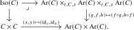
We define \(\pi _{\Iso }\colon \Iso (C) \to \Ar (C)\) to be the composite functor \[ \Iso (C) \to \Ar (C) \times _{t,C,s} \Ar (C) \times _{t,C,s} \Ar (C) \xrightarrow {\pr _2} \Ar (C). \] An object of \(\Iso (C)\) is a triple of morphisms \((g\colon y' \to x, f\colon x \to y, h\colon y \to x')\) together with isomorphisms \(f \circ g \cong \id _y\) and \(h \circ f \cong \id _x\). Its image under \(\pi _{\Iso }\) is the morphism \(f\).
Exercise 1.4.22. Give a precise construction of the right vertical functor in the pullback defining \(\Iso (C)\). Hint: Project to the composable pairs \((f,g)\) and \((h,f)\), apply the composition functor to each pair, and then take their product.
Remark 1.4.23. Note that \(\Iso (C)\) encodes separate left and right inverses \(g\) and \(h\) of \(f\), rather than a single two-sided inverse \(f^{-1}\). The reason for this is to guarantee that the fibers of \(\pi _{\Iso }\colon \Iso (C) \to \Ar (C)\) are either empty or contractible, so that being an isomorphism is really a property of a morphism rather than additional structure. This is made precise by Proposition 1.5.6.
As one expects, the identity map \(\id _x\colon x \to x\) is invertible in \(C\) for every object \(x\) of \(C\):
Construction 1.4.24. The identity morphisms define a canonical functor \[ i\colon C \to \Iso (C). \] Indeed, restriction along \(p_{[1]}\colon [1] \to [0]\) gives a functor \[ p_{[1]}^*\colon C \to \Ar (C), \qquad x \mapsto \id _x, \] whose composites with the source and target functors \(s,t\colon \Ar (C) \to C\) are both isomorphic to \(\id _C\). The triple \((p_{[1]}^*,p_{[1]}^*,p_{[1]}^*)\) therefore lifts to a functor \[ C \to \Ar (C) \times _{t,C,s} \Ar (C) \times _{t,C,s} \Ar (C), \qquad x \mapsto (\id _x,\id _x,\id _x). \] By Lemma 1.4.8 there is a natural isomorphism \(\id _x \circ \id _x \cong \id _x\), so the composite of this functor with \((g,f,h) \mapsto (f \circ g, h \circ f)\) is naturally isomorphic to the composite of the diagonal \(\Delta \colon C \to C \times C\) with \((x,y) \mapsto (\id _y, \id _x)\). The universal property of the pullback defining \(\Iso (C)\) thus provides the desired functor \(i\), and it satisfies \(\pi _{\Iso } \circ i \cong p_{[1]}^*\).
Axiom F (Rezk axiom). For every \(\infty \)-category \(C\) the functor \(i\colon C \to \Iso (C)\) is an equivalence.
The Rezk axiom now implies that the hom animae constructed above really are animae.
Proposition 1.4.25 (Hom animae are animae). Let \(C\) be an \(\infty \)-category and let \(x\) and \(y\) be objects in \(C\). Then the hom anima \(\Hom _C(x,y)\) is indeed an anima.
A proof is given in the online supplementary material.
Remark 1.4.26. The condition that the functor \(i\colon C \to \Iso (C)\) is an equivalence is known as the completeness condition. It was used by Rezk [Rezk (2001)] to provide a model of \(\infty \)-categories, called complete Segal spaces. A detailed discussion of the equivalence between \(\infty \)-categories and complete Segal animae will be given in Chapter 24.
The Rezk axiom implies that two objects \(x\) and \(y\) in \(C\) may be identified with each other as soon as we find an invertible morphism \(f\colon x \to y\) between them:
Corollary 1.4.27. Let \(x\) and \(y\) be objects of \(C\) and assume there exists an invertible morphism \(f\colon x \to y\). Then there exists a natural isomorphism \(x \cong y\) as functors \(* \to C\).
Proof. The inverse and the two triangles for \(f\) determine an object \(\widetilde f\) of \(\Iso (C)\) whose image under \(\pi _{\Iso }\) is \(f\). Since the functor \(i\colon C \to \Iso (C)\) is an equivalence, there exists an object \(z\) of \(C\) together with an isomorphism \(i(z) \cong \widetilde f\) in \(\Iso (C)\). Applying the source and target functors \(s,t\colon \Ar (C) \to C\) to the image of this isomorphism under \(\pi _{\Iso }\) produces isomorphisms \(z \cong x\) and \(z \cong y\) in \(C\). By inversion we obtain \(x \cong z\) and by composition we obtain \(x \cong y\), as desired. □
The previous corollary is the object-level shadow of a more general fact. For functors \(f,g\colon C \to D\), we now have two a priori different ways to say that \(f\) and \(g\) are the same: on the one hand, we have the primitive notion of a natural isomorphism \(\alpha \colon f \cong g\) from Axiom A.1; on the other hand, we may consider an invertible natural transformation \(\alpha \colon f \iso g\), that is, an invertible morphism in the functor category \(\Fun (C,D)\). The Rezk axiom shows that these are equivalent notions.
Corollary 1.4.28. Let \(f,g\colon C \to D\) be functors. Then the \(\infty \)-category \((f \cong g)\) encoding primitive natural isomorphisms is equivalent to the fiber over \((f,g)\) of \[ (s,t)\colon \Iso (\Fun (C,D)) \to \Fun (C,D)\times \Fun (C,D). \] In particular, primitive natural isomorphisms \(f\cong g\) correspond to invertible natural transformations \(f\iso g\).
Proof. Recall from Exercise 1.3.23 that there is an \(\infty \)-category \((f \cong g)\) encoding the primitive natural isomorphisms between \(f\) and \(g\), defined as the fiber over \((f,g)\) of the diagonal functor \[ \Fun (C,D) \to \Fun (C,D) \times \Fun (C,D). \] Now note that this diagonal functor factors as \[ \Fun (C,D) \xrightarrow {i} \Iso (\Fun (C,D)) \xrightarrow {(s,t)} \Fun (C,D) \times \Fun (C,D). \] Since the first functor is an equivalence by the Rezk axiom, the fiber \((f \cong g)\) may equivalently be computed as the fiber of the functor \((s,t)\) over \((f,g)\): there is a pullback square
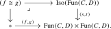
An object of this fiber consists of a natural transformation \(f\to g\) together with left and right inverse data. Hence it encodes an invertible natural transformation \(f\iso g\), as claimed. □
Generated from the authoritative LaTeX source.